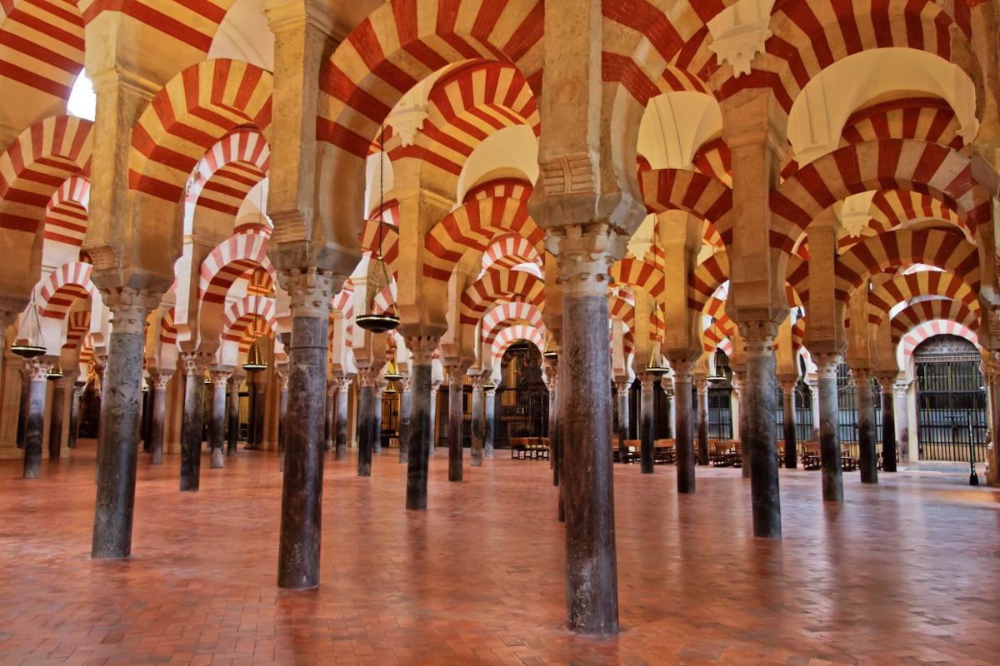

Se empezó a construir como mezquita en el año 786, con la apropiación por los conquistadores musulmanes de la basílica hispanorromana de San Vicente Mártir y la reutilización de parte de los materiales, quedando reservada al culto musulmán.3 El edificio resultante fue objeto de ampliaciones durante el Emirato de Córdoba y el Califato de Córdoba. Con 23 400 metros cuadrados, fue la segunda mezquita más grande del mundo en superficie, por detrás de la Mezquita de La Meca, siendo sólo alcanzada posteriormente por la Mezquita Azul (Estambul, 1588). Una de sus principales características es que su muro de la qibla no fue orientado hacia La Meca, sino 51º grados más hacia el sur, algo habitual en las mezquitas de al-Ándalus.
En 1238, tras la Reconquista cristiana de la ciudad, se llevó a cabo su consagración como catedral de la diócesis con la Ordenación episcopal de su primer obispo, Lope de Fitero.4 El edificio alberga el cabildo catedralicio de la Diócesis de Córdoba, y por su carácter de templo católico y sede episcopal, está reservado al culto católico. En 1523, bajo la dirección de los arquitectos Hernán Ruiz, el Viejo y su hijo, se construyó su basílica cruciforme renacentista de estilo plateresco.
Hoy todo el conjunto constituye el monumento más importante de Córdoba, y también de toda la arquitectura andalusí, junto con la Alhambra, así como el más emblemático del arte omeya hispanomusulmán. Declarada como Bien de interés cultural2 y Patrimonio Cultural de la Humanidad como parte del centro histórico de la ciudad,5 se incluyó por el público entre los 12 Tesoros de España en 20076 y fue premiada como el mejor sitio de interés turístico de Europa y sexto del mundo según un concurso de TripAdvisor.7 En 2018 rozó los dos millones de visitantes, siendo su récord histórico y convirtiéndolo en uno de los monumentos más visitados de España

Ascender